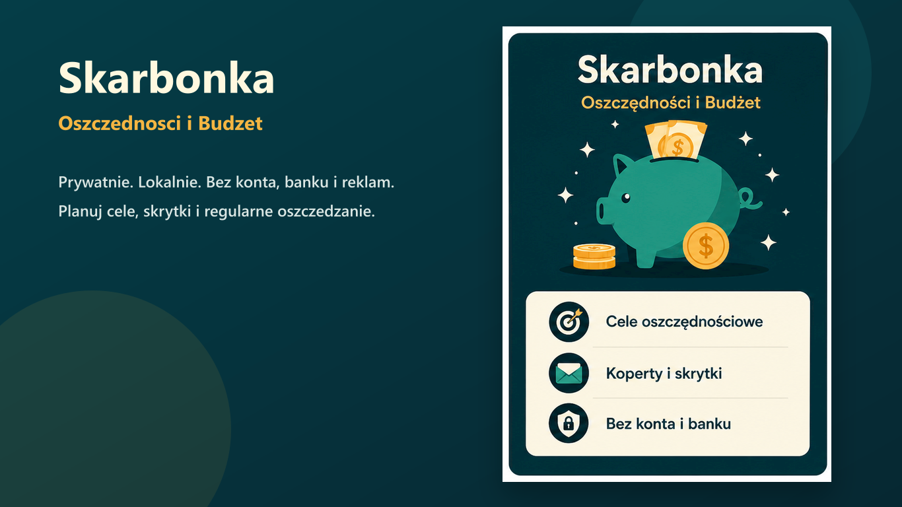

Dostępna w Microsoft Store
Lokalny notes do odkładania pieniędzy
Aplikacja pomaga dzielić oszczędności na cele, koperty i skrytki. Możesz planować wpłaty z terminem albo bez daty, zapisywać wypłaty, tworzyć backupy i pilnować postępów bez podpinania konta bankowego.
- Cele oszczędnościowe i prywatne skrytki
- Planowanie z terminem albo bez daty
- Lokalne dane, kopie zapasowe i brak chmury
- Model: płacisz raz i masz na zawsze